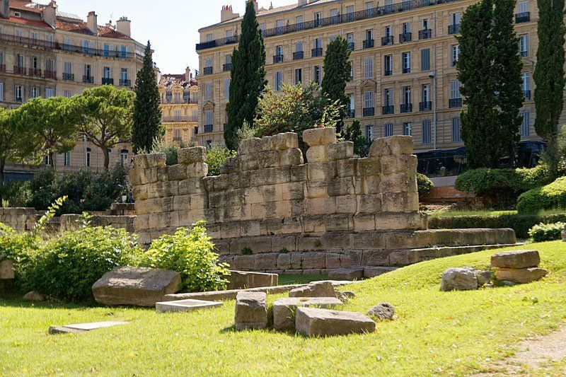
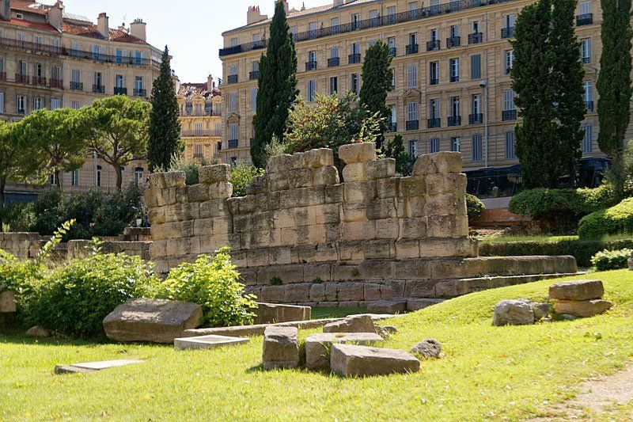

Palais Longchamp
Situé dans le quartier des Cinq Avenues, le Palais fut édifié à partir de 1862 par la municipalité pour célébrer l'arrivée des eaux de la Durance dans la ville, via le Canal de Marseille. Les travaux du Palais furent dirigés par l'architecte Henri-Jacques Espérandieu et achevés en 1869 pour des raisons budgétaires. Il a été inauguré le 14 août de la même année et ouvert au public le lendemain, 15 août, jour de la fête de l'Empereur Napoléon III. Sous sa colonnade circulaire, le Palais abrite deux musées : le Musée des Beaux-Arts dans son aile gauche et le Muséum d'Histoire Naturelle dans son aile droite. Les jardins du Palais ont également accueilli jusqu'en 1987 un jardin zoologique. Ils abritent actuellement l'Observatoire de Marseille. Château d'eau, entouré d'un jardin et de cascades, le Palais Longchamp a été conçu comme un véritable hymne à l'eau
 
